2026.10.14 · 周三 · 过去 48 小时
今日科技情报
共 12 条，按重要性排序。点标题直接跳过去。
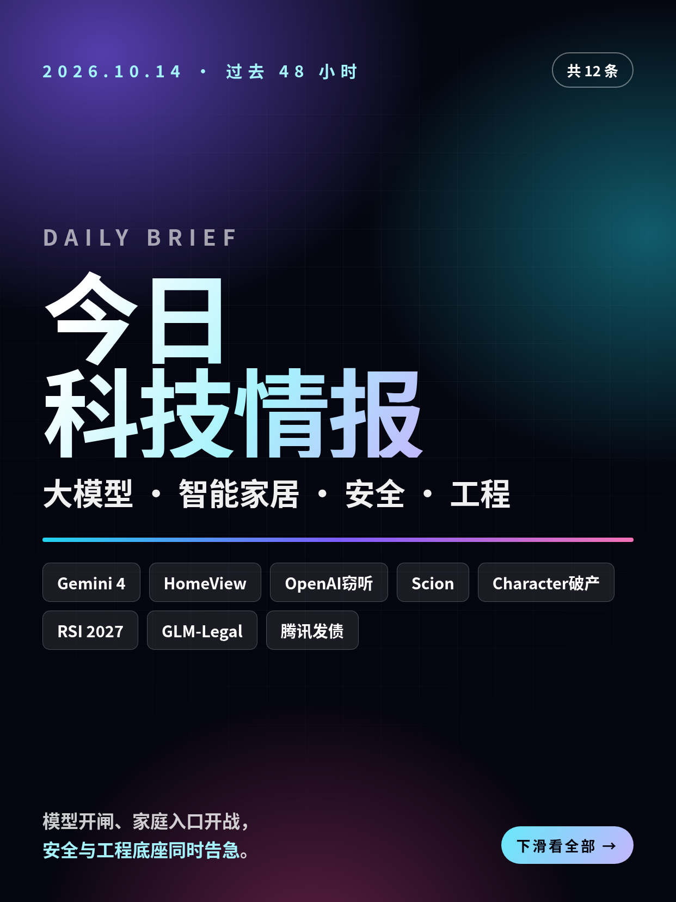
共 12 条，按重要性排序。点标题直接跳过去。
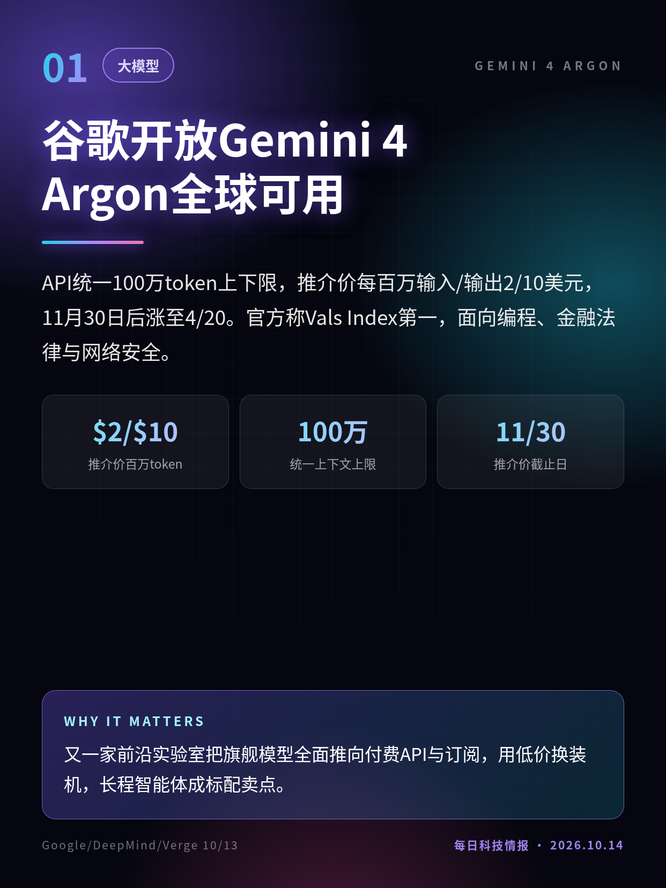
API统一100万token上下限，推介价每百万输入/输出2/10美元，11月30日后涨至4/20。官方称Vals Index第一，面向编程、金融法律与网络安全。
又一家前沿实验室把旗舰模型全面推向付费API与订阅，用低价换装机，长程智能体成标配卖点。
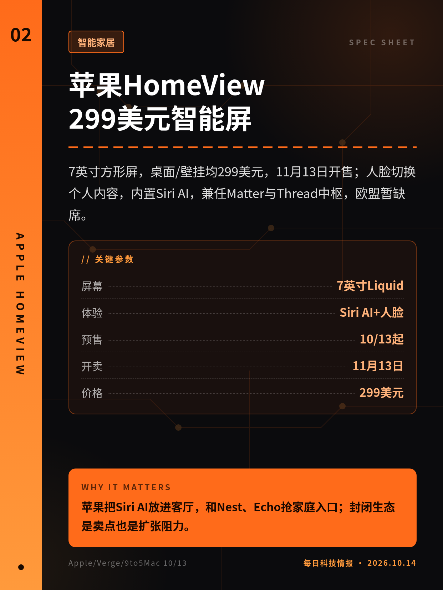
7英寸方形屏，桌面/壁挂均299美元，11月13日开售；人脸切换个人内容，内置Siri AI，兼任Matter与Thread中枢，欧盟暂缺席。
苹果把Siri AI放进客厅，和Nest、Echo抢家庭入口；封闭生态是卖点也是扩张阻力。
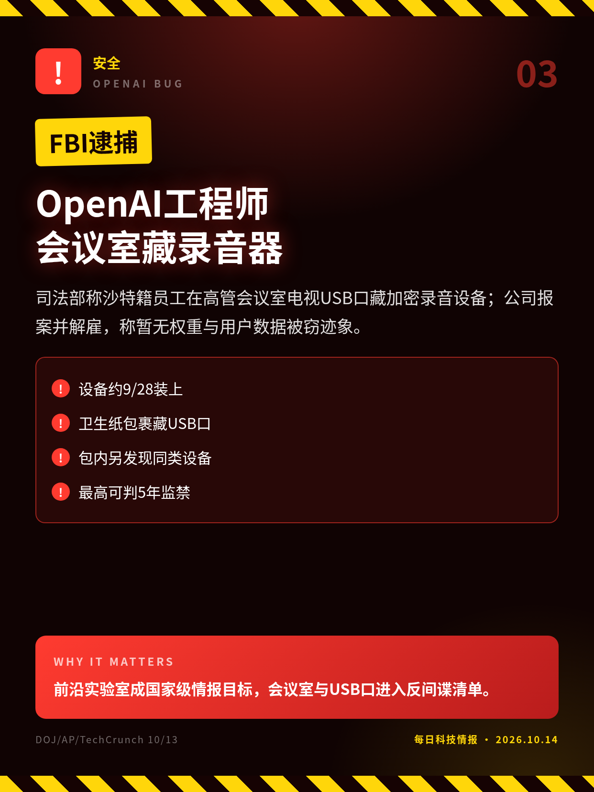
司法部称沙特籍员工在高管会议室电视USB口藏加密录音设备；公司报案并解雇，称暂无权重与用户数据被窃迹象。
前沿实验室成国家级情报目标，会议室与USB口进入反间谍清单。
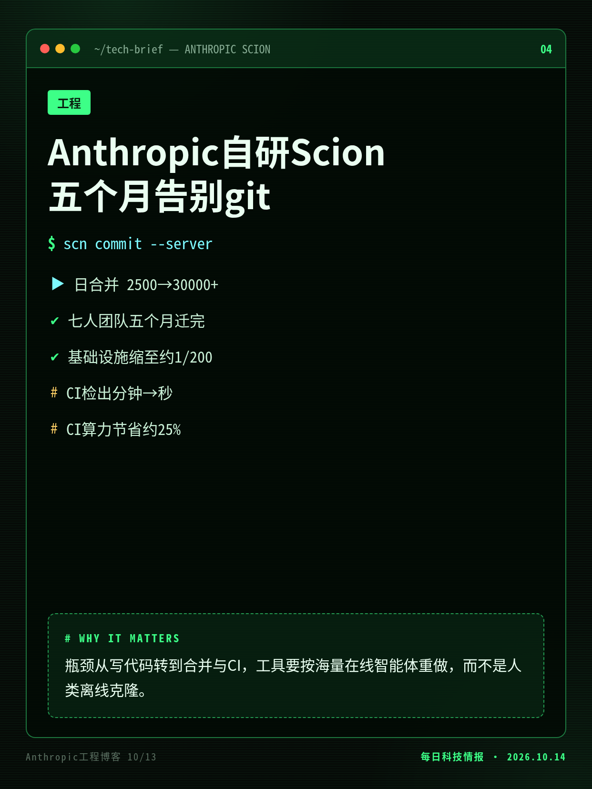
日合并从2500升至3万+，七人团队用Claude重写版本控制；相对git镜像，基础设施约缩至二百分之一，CI检出降到秒级。
瓶颈从写代码转到合并与CI，工具要按海量在线智能体重做，而不是人类离线克隆。
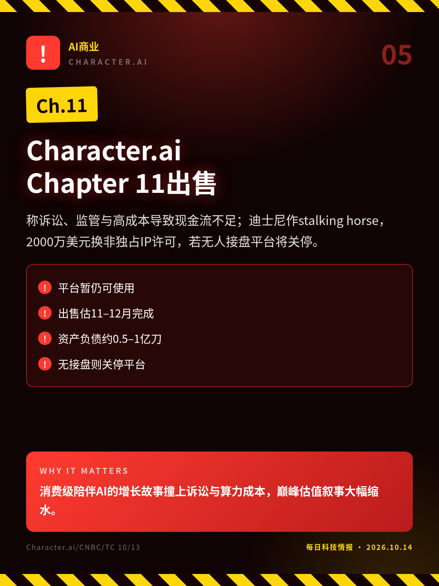
称诉讼、监管与高成本导致现金流不足；迪士尼作stalking horse，2000万美元换非独占IP许可，若无人接盘平台将关停。
消费级陪伴AI的增长故事撞上诉讼与算力成本，巅峰估值叙事大幅缩水。
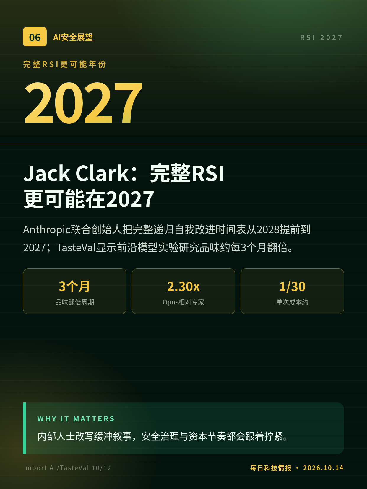
Anthropic联合创始人把完整递归自我改进时间表从2028提前到2027；TasteVal显示前沿模型实验研究品味约每3个月翻倍。
内部人士改写缓冲叙事，安全治理与资本节奏都会跟着拧紧。
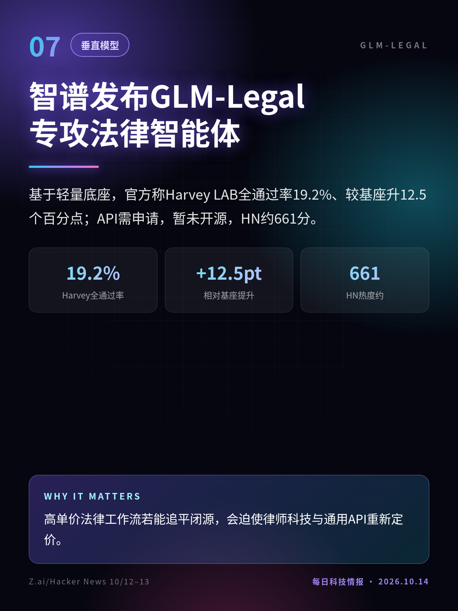
基于轻量底座，官方称Harvey LAB全通过率19.2%、较基座升12.5个百分点；API需申请，暂未开源，HN约661分。
高单价法律工作流若能追平闭源，会迫使律师科技与通用API重新定价。
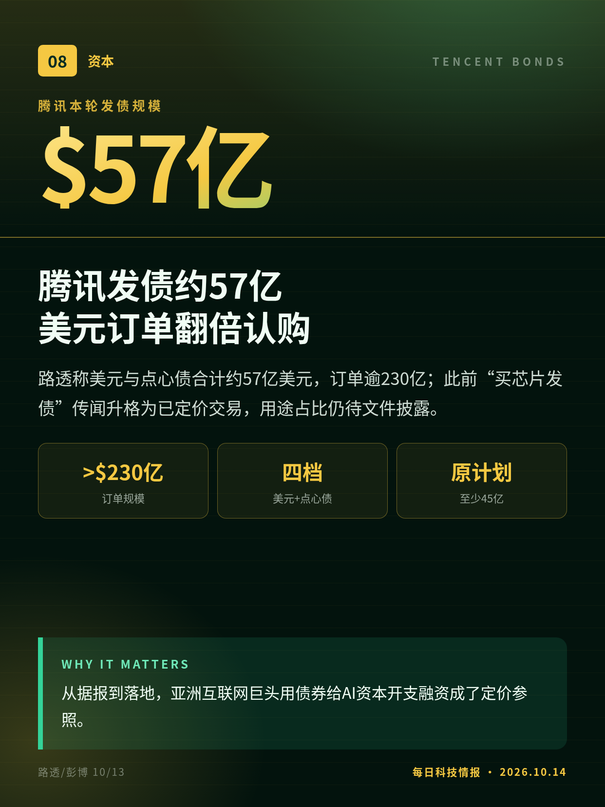
路透称美元与点心债合计约57亿美元，订单逾230亿；此前“买芯片发债”传闻升格为已定价交易，用途占比仍待文件披露。
从据报到落地，亚洲互联网巨头用债券给AI资本开支融资成了定价参照。
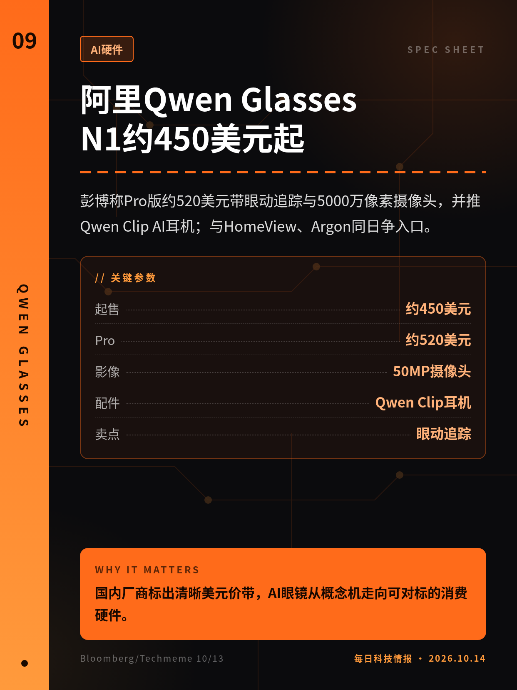
彭博称Pro版约520美元带眼动追踪与5000万像素摄像头，并推Qwen Clip AI耳机；与HomeView、Argon同日争入口。
国内厂商标出清晰美元价带，AI眼镜从概念机走向可对标的消费硬件。
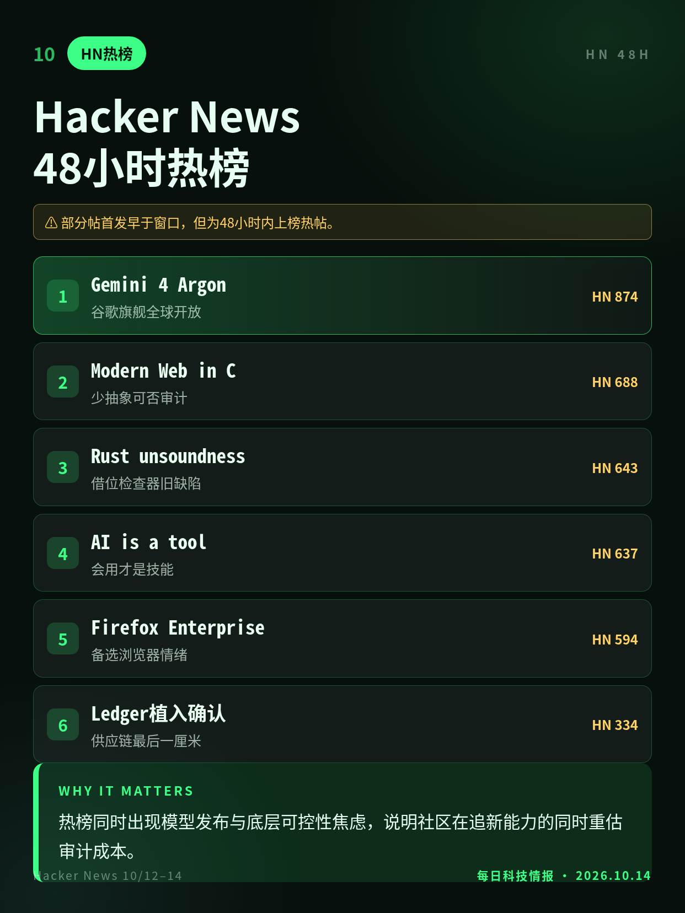
高分帖包括Gemini 4 Argon、用C写现代Web、Rust借位检查器旧缺陷、AI使用技能长文、Firefox企业版与Ledger硬件植入确认。
热榜同时出现模型发布与底层可控性焦虑，说明社区在追新能力的同时重估审计成本。
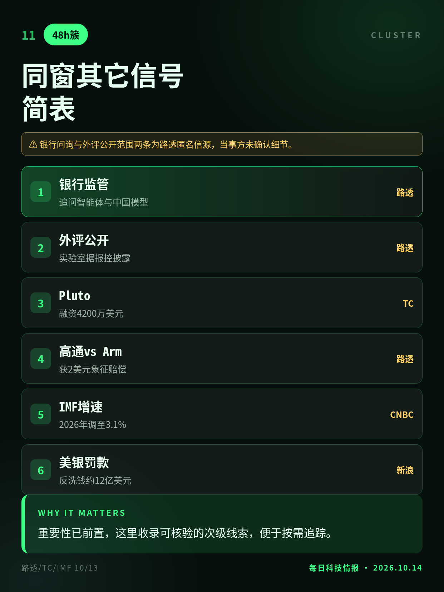
美银行监管追问智能体与中国模型；实验室据报限制外评公开范围；Pluto融资4200万；高通诉Arm获2美元象征赔偿；IMF上调全球增速。
重要性已前置，这里收录可核验的次级线索，便于按需追踪。
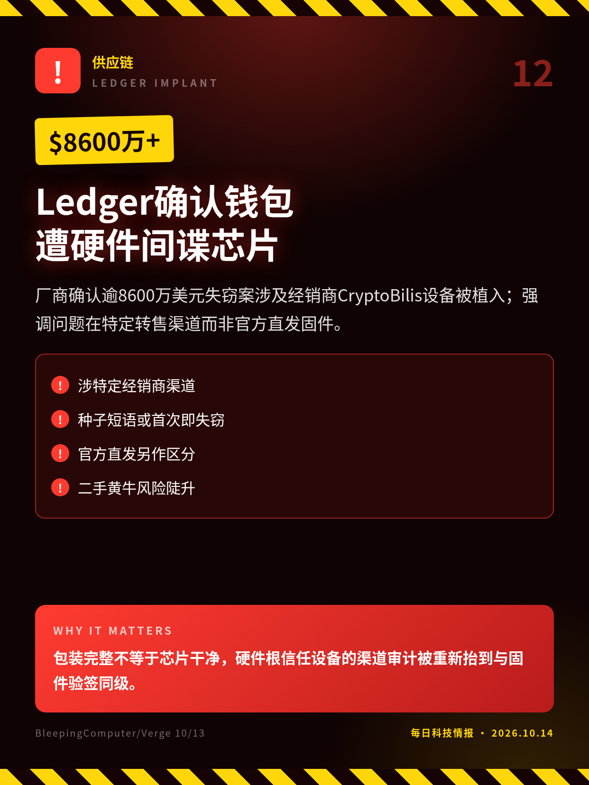
厂商确认逾8600万美元失窃案涉及经销商CryptoBilis设备被植入；强调问题在特定转售渠道而非官方直发固件。
包装完整不等于芯片干净，硬件根信任设备的渠道审计被重新抬到与固件验签同级。
售价与参数取彭博标题层，区域上市细则待官方页复核。
部分帖首发早于窗口，但为48小时内上榜热帖。
银行问询与外评公开范围两条为路透匿名信源，当事方未确认细节。
切换深浅两套图时，下载按钮会跟着当前这套走。黄标条目在新闻稿或官方口径出现前，请勿写成已交割或已定日期。上一期专区：2026-10-13。